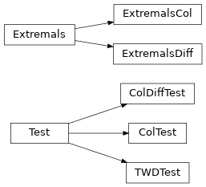

Documentation¶
extremals Module¶
Detect extremals data in a pandas series or dataframe
Author: Fabio Tonini
Examples in this documentation requires
import pandas as pd
import extremals as xt
an example dataframe
data = pd.DataFrame(
{'col1' : [3, 100, 1, -3, None, 9, 22, 8, 9, 0],
'col2' : [100, 200, -123, None, 7, -34.5, 95, 3, 12, -567],
'col3' : [0, 74, -13.4, 44, 21, 3, -4, None, None, 21]},
index = list('abcdefghil')
)
# data is the dataframe
col1 col2 col3
a 3.0 100.0 0.0
b 100.0 200.0 74.0
c 1.0 -123.0 -13.4
d -3.0 NaN 44.0
e NaN 7.0 21.0
f 9.0 -34.5 3.0
g 22.0 95.0 -4.0
h 8.0 3.0 NaN
i 9.0 12.0 NaN
l 0.0 -567.0 21.0
Functions¶
AddTests(data, tests[, normalized]) |
Concatenate data with the dataframe results of the tests in tests. |
AddTWDTest(data[, keys, exclude, normalized]) |
Append the result of a TWDTest as a column to data, sorting it according to their values. |
GetDiffTests(data[, keys, exclude, normalized]) |
Returns a list of ColDiffTest, one for each pair of specified columns. |
GetColTests(data[, keys, exclude, normalized]) |
Returns a list of ColTest, one for each specified column. |
Normalize(obj[, dropna]) |
Returns a normalized copy of obj. |
OutOfBound(obj[, low, high, key, bound]) |
Returns a dataframe or a series which is a concatenation of the lowest values of obj followed by the highest ones, depending on low, high and bound. |
RWD(value, mean, unstd) |
Relative Weighted Distance |
TWD(values, means, unstds) |
Total Weighted Distance |
TWDExtremals(data[, bound, keys, exclude, name]) |
Applies a TWDTest on data |
PurgeTWD(data, high[, steps, keys, exclude, …]) |
Iteratively applies a TWDTest on data, removing the high “worst” elements from data in steps steps. |
FilterDatakeys(data[, keys, exclude]) |
Filter keys from non numeric columns and data for duplicated columns. |
Classes¶
Test([keys, function, args, normalized, name]) |
This class implements the idea of a Test to be runned on a dataframe. |
ColTest(key[, normalized, name]) |
This is a simple test on one column key. |
ColDiffTest(key1, key2[, normalized, name]) |
It tests the difference between columns key1 and key2: the function self.function maps a row to the difference of the values corresponding to the two columns. |
TWDTest([keys, name]) |
Returns a Total Weighted Distance test |
Extremals(data[, tests]) |
This class allows to create a new dataframe as results of multiple tests and to look for the extremals rows. |
ExtremalsCol(data[, keys, exclude, normalized]) |
This class applies a series of ColTest to the dataframe data, one for each specified column. |
ExtremalsDiff(data[, keys, exclude, normalized]) |
This class applies a series of ColDiffTest to the dataframe data, one for each pair of specified columns. |
Class Inheritance Diagram¶
